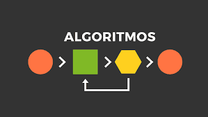

Para comenzar la búsqueda de soluciones el agente debe formular un objetivo y luego debe usar ese objetivo para formular un problema.
Un problema consiste en cuatro partes las cuales son:
El estado inicial, un conjunto de acciones, una función para el test objetivo, y una función de costo del camino. El entorno del problema se representa por un espacio de estados. Un camino por el espacio de estados desde el estado inicial a un estado objetivo es una solución.
Un algoritmo sencillo y general, puede usarse para resolver cualquier problema y las variantes específicas del algoritmo incorporan estrategias diferentes.
Los algoritmos de búsqueda se juzgan sobre la base de completitud, optimización, complejidad en tiempo y complejidad en espacio. La complejidad depende de factor de ramificación en el espacio de estados y la profundidad de la solución más superficial.

Existen diferentes tipos de búsquedas y son los siguientes:
La búsqueda primero en anchura selecciona para su expansión el nodo no expandido más superficial en el árbol de búsqueda. Es completo, óptimo para costos unidad, y tiene la complejidad en tiempo y en espacio.
La búsqueda de coste uniforme es similar a la búsqueda primero en anchura pero expande el nodo con el costo más pequeño del camino. Es completo y óptimo si el costo de cada paso excede de una cota positiva.
La búsqueda primero en profundidad selecciona para la expansión el nodo no expandido más profundo en el árbol de búsqueda. No es ni completo, ni óptimo, y tiene la complejidad en tiempo de O y la complejidad en espacio de O, donde m es la profundidad máxima de cualquier camino en el espacio de estados.
La búsqueda de profundidad limitada impone un límite de profundidad fijo a una búsqueda primero en profundidad.
La búsqueda de profundidad iterativa llama a la búsqueda de profundidad limitada aumentando este límite hasta que se encuentre un objetivo. Es completo, óptimo para costos unidad, y tiene la complejidad en tiempo de O y la complejidad en espacio de O.
La búsqueda bidireccional puede reducir enormemente la complejidad en tiempo, pero no es siempre aplicable y puede requerir demasiado espacio.
Búsqueda informada y exploración:
La búsqueda heurística:
Se refiere a la exploración de un conjunto de posibles soluciones para encontrar la mejor solución, utilizando una estrategia guiada por una función heurística. La función heurística proporciona una estimación del costo o la calidad de cada posible solución, lo que permite al algoritmo de búsqueda enfocarse en las soluciones más prometedoras.
La búsqueda A* es una técnica de búsqueda informada que utiliza una función heurística para guiar la exploración de soluciones y lograr una mejor eficiencia.
Búsqueda primero el mejor:
Es una BÚSQUEDA-GRAFO donde los nodos no expandidos de costo mínimo (según alguna medida) se escogen para la expansión.
Búsqueda primero el mejor avara:
Expande nodos con h(n) mínima. No es óptima, pero es a menudo eficiente.
BRPM y A*MS:
Son algoritmos de búsqueda robustos y óptimos que utilizan cantidades limitadas de memoria; con suficiente tiempo, pueden resolver los problemas que A* no puede resolver porque se queda sin memoria.
Algoritmo Genético:
Es una búsqueda de ascensión de colinas estocástica en la que se mantiene una población grande de estados. Los estados nuevos se generan por mutación y por cruce, combinando pares de estados de la población.
La Exploración:
La exploración se refiere a la capacidad de un agente inteligente para buscar nuevas soluciones en lugar de seguir soluciones ya conocidas. La exploración es especialmente importante en entornos dinámicos y cambiantes, donde el agente debe adaptarse a nuevas situaciones para resolver problemas de manera efectiva.
Los Problemas de Exploración:
Surgen cuando el agente no tiene la menor idea acerca de los estados y acciones de su entorno. Para entornos seguramente explorables, los agentes de búsqueda en línea pueden construir un mapa y encontrar un objetivo si existe. Las estimaciones de las heurística, que se actualizan por la experiencia, proporcionan un método efectivo para escapar de mínimos locales.